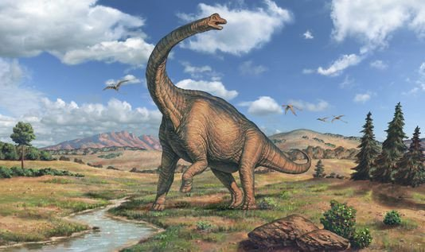

Зауроподоморфы
Зауроподоморфы (лат. Sauropodomorpha) — клада ящеротазовых динозавров, традиционно рассматриваемая в ранге подотряда. Жили с позднего триаса до конца мела (231,4—66 млн лет назад). Ранние завроподоморфы были небольшими плотоядными и всеядными бипедальными («двуногими») динозаврами. Более продвинутые формы характеризуются строгой растительноядностью, длинной шей, толстыми столбообразными конечностями и зачастую огромными размерами, не имеющих себе равных среди других наземных животных, с массой тела более 60 тонн.
Зауроподоморфы были самыми разнообразными и многочисленными среди групп динозавров на границе триаса и юры, достигнув широкого распространения по всему миру и являлись доминирующими растительноядными животными в наземных экосистемах вплоть до их упадка и исчезновения в конце мелового периода.
Классификация Зауроподоморфов
- Прозауроподы
- Анхизавриды
- Платеозавриды
- Меланозавриды
- Зауроподы
- Брахиозавриды
- Камаразавриды
- Эвгелоподы
- Цетиозавриды
- Эвгелоподы
- Диплодоциды
- Дикреозавры
- Титанозавриды